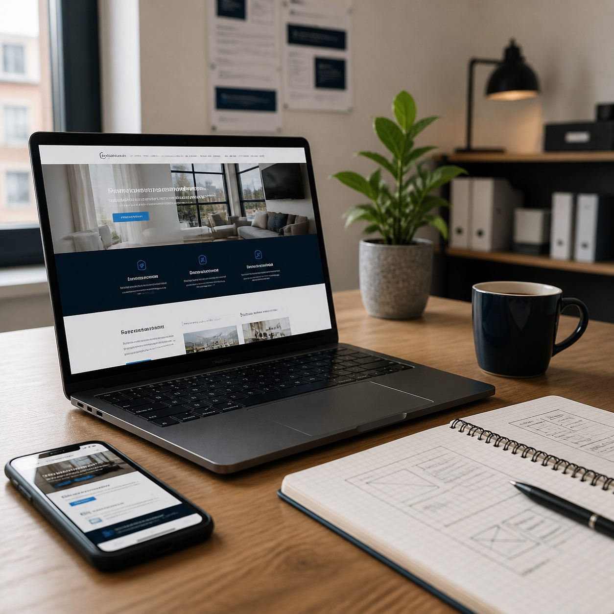

Modernes Design
Professioneller Auftritt für Unternehmen und Angebote.
Webdesign Berlin für Unternehmen
Wir erstellen moderne, schnelle und mobil optimierte Websites für Unternehmen, Selbstständige, lokale Geschäfte, Produkte, Dienstleistungen, Praxen, Studios und Agenturen in Berlin – mit klarer Struktur, seriösem Auftritt und lokaler Sichtbarkeit für mehr qualifizierte Anfragen.

Local Web Berlin auf einen Blick
Local Web Berlin ist eine Webdesign-Dienstleistung aus Berlin für Unternehmen, Selbstständige, lokale Geschäfte, Praxen, Studios, Agenturen, Produkte und Dienstleistungen. Wir erstellen moderne, schnelle und mobil optimierte Websites, die vertrauenswürdig wirken und Anfragen erleichtern.
Über mich
Mein Name ist Ali und ich bin der Gründer von Berlin Web Local.
Ich unterstütze Unternehmen, Selbstständige, lokale Geschäfte und Dienstleister dabei, online professioneller sichtbar zu werden. Mein Ziel ist es, moderne Webseiten zu erstellen, die Vertrauen aufbauen, klar verständlich sind und Kunden den ersten Kontakt erleichtern.
Bei Berlin Web Local geht es nicht nur um schönes Design. Eine Website soll Ihr Unternehmen seriös präsentieren, Ihre Leistungen klar erklären und Besuchern schnell zeigen, warum sie bei Ihnen richtig sind.
Ich lege Wert auf ehrliche Kommunikation, saubere Umsetzung und einfache Lösungen, die wirklich zum jeweiligen Geschäft passen. Ohne unnötige Fachbegriffe, ohne übertriebene Versprechen, sondern mit einem klaren Fokus auf einen professionellen Online-Auftritt.
Leistungen

Wir bauen Ihre Website schlank, modern und klar verständlich. Sie lädt schnell, wirkt auf Smartphones professionell und führt Besucher ohne Umwege zu Kontakt, Anfrage oder Buchung.
Wir optimieren Ihre Website technisch sauber und stärken Ihr Google Business Profil. So wird Ihr Angebot besser gefunden, wirkt seriöser und erhält mehr relevante Anfragen.
Ihre Seite erhält ein funktionierendes Kontaktformular, auf Wunsch Online-Buchung und monatliche Pflege. Änderungen, Sicherheit und schnelle Ladezeiten bleiben dauerhaft im Blick.
Portfolio
Custom Code aus Berlin
LWB realisiert digitale Auftritte, die Berliner Unternehmen seriös und verständlich präsentieren. Wir verbinden strategisches Denken mit modernem, schnellem Custom Code — für Webseiten, die Ihre Marke stärken und Kunden die Kontaktaufnahme erleichtern.
Referenzen
Beispiel für ein terminbasiertes Unternehmen in Berlin-Mitte: Eine mobile Website mit Online-Buchung reduziert Rückfragen und macht Anfragen auch außerhalb der Öffnungszeiten möglich.
Beispiel für ein dienstleistungsorientiertes Unternehmen in Spandau: Eine klare Leistungsseite mit Anfrage- und Bewerbungsfunktion kann Kunden, Interessenten und passende Bewerber besser abholen.
Beispiel für ein lokales Geschäft in Kreuzberg: Besucher finden Angebote, Öffnungszeiten, Standort und Kontakt sofort auf dem Handy. Änderungen bleiben durch monatliche Pflege aktuell.
Unklare Seite, keine mobilen CTAs, wenig Vertrauen. Hier kann später ein Screenshot der alten Website platziert werden.
Moderner Auftritt, klare Pakete, direkte Kontaktwege. Hier kann später der neue Website-Screenshot hinein.
Pakete
Für Unternehmen und Selbstständige, die schnell professionell online sichtbar werden möchten.
Geeignet für: kompakte Websites, erste Online-Präsenz und klare Kontaktmöglichkeiten.
Für Unternehmen, die mehr Struktur, mehrere Seiten und bessere Anfragewege benötigen.
Geeignet für: wachsende Angebote, mehrere Leistungen, Online-Buchung und bessere Sichtbarkeit.
Für Unternehmen, die Website, lokale Sichtbarkeit, GEO und regelmäßige Optimierung verbinden möchten.
Geeignet für: umfassende Betreuung, laufende Optimierung und langfristige digitale Sichtbarkeit.
Ablauf
Wir besprechen Ihre Wünsche unkompliziert per Telefon oder WhatsApp. Ohne Fachjargon, dafür mit klaren Zielen.
Wir erstellen ein maßgeschneidertes Design für Ihr Projekt. Durch modernen Custom Code bleibt die Seite schlank, schnell und gut wartbar.
Ihre Website geht live. Auf Wunsch übernehmen wir Hosting, Sicherheit und zukünftige Textänderungen, damit Sie sich auf Ihr Geschäft konzentrieren können.
FAQ
Die Kosten hängen vom Umfang, den gewünschten Funktionen und der laufenden Betreuung ab. Nach einem kurzen Website-Check erhalten Sie ein individuelles Angebot, das zu Ihrem Projekt passt.
Wir erstellen Websites für Unternehmen, Selbstständige, lokale Geschäfte, Produkte, Dienstleistungen, Praxen, Studios, Agenturen und weitere Geschäftsmodelle. Wichtig ist, dass Angebot, Kontakt und Nutzen klar verständlich werden.
Ja. Wir prüfen Kategorien, Beschreibung, Leistungen, Bilder, Öffnungszeiten und die Verlinkung zur Website. Ziel ist ein vollständiger, vertrauenswürdiger Auftritt in Google Suche und Google Maps.
Ja. Eine Online-Buchung kann für viele Geschäftsmodelle sinnvoll sein, etwa für Termine, Beratungen, Reservierungen, Erstgespräche oder Projektanfragen. Wir achten darauf, dass Buchung und Kontakt auf dem Handy schnell erreichbar sind.
GEO bedeutet, Inhalte und Struktur so aufzubauen, dass KI-Suchsysteme wie ChatGPT, Gemini oder Perplexity Ihr Unternehmen besser verstehen. Dafür braucht es klare Leistungen, lokale Bezüge, sauberen Code und hilfreiche Inhalte.
Eine klare One-Page-Website kann oft zügig umgesetzt werden. Mehrseiten-Websites mit Online-Buchung, SEO-Struktur und Google Business Profil brauchen mehr Vorbereitung, damit sie sauber funktionieren und gut gefunden werden.
Wir arbeiten für lokale und regionale Unternehmen, Selbstständige, Geschäfte, Praxen, Studios, Agenturen, Dienstleistungsanbieter, Produktanbieter und digitale Geschäftsmodelle in Berlin.
Ja. Monatliche Pflege ist Teil unseres Modells. Dazu gehören technische Checks, Updates, kleinere Inhaltsänderungen und je nach Paket laufende Verbesserungsvorschläge für Sichtbarkeit und Conversion.
Kontakt
Sie führen ein Unternehmen, ein lokales Geschäft oder ein eigenes Angebot in Berlin und möchten mehr qualifizierte Anfragen über Ihre Website erhalten? Senden Sie uns Ihre aktuelle Website oder Ihre Idee. Wir prüfen kostenlos, was verbessert werden kann.